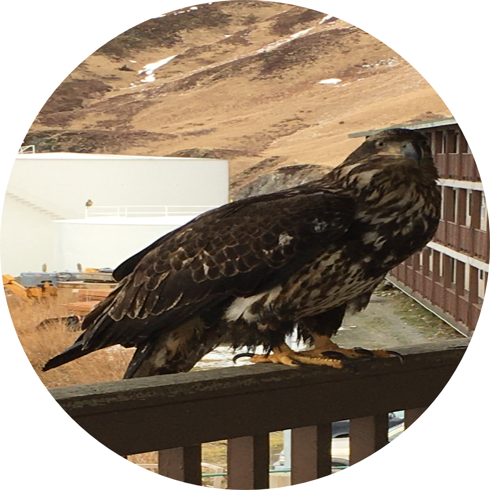

|  |
Chosum TashiFisheries Biologist at Alaskan Observers. I am an individual with an interest in wildlife ecology. I have a masters in biology from College of Staten Island, CUNY. I am currently working as a Fisheries Biologist where I collected data while on-board in a commerical fishing vessel. The data collected is used by NMFS to manage the fisheries in the North West Pacific Ocean. Contact Me |
| Dates | Work |
|---|---|
| May 2020 - Current | Fisheries Biologist |
| June 2021 - Aug 2021 | Pool Aquatics Manager |
| Aug 2018 - Dec 2019 | Adjunct lecturer |
|